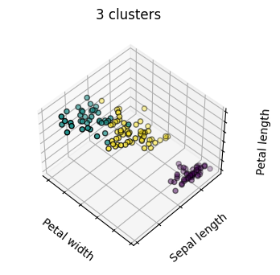
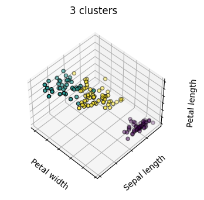

Clustering Algorithms
Contents
Clustering Algorithms#
Attempts to find similar groupings within your dataset
Imports Packages#
import time
import warnings
import numpy as np
import matplotlib.pyplot as plt
from sklearn import cluster, datasets
from sklearn.preprocessing import StandardScaler
from sklearn.cluster import KMeans, AgglomerativeClustering
from sklearn.datasets import make_blobs
from sklearn.metrics import pairwise_distances_argmin
from sklearn.neighbors import kneighbors_graph
from itertools import cycle, islice
# Though the following import is not directly being used, it is required
# for 3D projection to work
from mpl_toolkits.mplot3d import Axes3D
%matplotlib inline
K-means clustering#
Tries to cluster data into n groups of equal variance by minimizing the inertia or within-cluster sum-of-squares $\(\sum_{i=0}^{n}\min_{\mu_{j} \in C}(||x_i-\mu_j||^2)\)\( where \)\mu_j$ is the mean of the samples in the cluster
This is not a great metric and fails a lot …
# Author: Phil Roth <mr.phil.roth@gmail.com>
# License: BSD 3 clause
plt.figure(figsize=(12, 12))
n_samples = 1500
random_state = 170
X, y = make_blobs(n_samples=n_samples, random_state=random_state)
# Incorrect number of clusters
y_pred = KMeans(n_clusters=2, random_state=random_state).fit_predict(X)
plt.subplot(221)
plt.scatter(X[:, 0], X[:, 1], c=y_pred)
plt.title("Incorrect Number of Blobs")
# Anisotropic distributed data
transformation = [[0.60834549, -0.63667341], [-0.40887718, 0.85253229]]
X_aniso = np.dot(X, transformation)
y_pred = KMeans(n_clusters=3, random_state=random_state).fit_predict(X_aniso)
plt.subplot(222)
plt.scatter(X_aniso[:, 0], X_aniso[:, 1], c=y_pred)
plt.title("Anisotropicly Distributed Blobs")
# Different variance
X_varied, y_varied = make_blobs(n_samples=n_samples,
cluster_std=[1.0, 2.5, 0.5],
random_state=random_state)
y_pred = KMeans(n_clusters=3, random_state=random_state).fit_predict(X_varied)
plt.subplot(223)
plt.scatter(X_varied[:, 0], X_varied[:, 1], c=y_pred)
plt.title("Unequal Variance")
# Unevenly sized blobs
X_filtered = np.vstack((X[y == 0][:500], X[y == 1][:100], X[y == 2][:10]))
y_pred = KMeans(n_clusters=3,
random_state=random_state).fit_predict(X_filtered)
plt.subplot(224)
plt.scatter(X_filtered[:, 0], X_filtered[:, 1], c=y_pred)
plt.title("Unevenly Sized Blobs")
plt.show()
C:\Users\jca92\AppData\Roaming\Python\Python310\site-packages\sklearn\cluster\_kmeans.py:1334: UserWarning: KMeans is known to have a memory leak on Windows with MKL, when there are less chunks than available threads. You can avoid it by setting the environment variable OMP_NUM_THREADS=6.
warnings.warn(
C:\Users\jca92\AppData\Roaming\Python\Python310\site-packages\sklearn\cluster\_kmeans.py:1334: UserWarning: KMeans is known to have a memory leak on Windows with MKL, when there are less chunks than available threads. You can avoid it by setting the environment variable OMP_NUM_THREADS=6.
warnings.warn(
C:\Users\jca92\AppData\Roaming\Python\Python310\site-packages\sklearn\cluster\_kmeans.py:1334: UserWarning: KMeans is known to have a memory leak on Windows with MKL, when there are less chunks than available threads. You can avoid it by setting the environment variable OMP_NUM_THREADS=6.
warnings.warn(
C:\Users\jca92\AppData\Roaming\Python\Python310\site-packages\sklearn\cluster\_kmeans.py:1334: UserWarning: KMeans is known to have a memory leak on Windows with MKL, when there are less chunks than available threads. You can avoid it by setting the environment variable OMP_NUM_THREADS=3.
warnings.warn(
How Clustering works?#
Selects the initial points of the centroid
Loops around two more steps
Assigns each sample to its nearest centroid
Computes the new centroid based on the mean
This process is repeated until it reaches some threshold value
Visualizing K-means Clustering#
X, y_true = make_blobs(n_samples=300, centers=4,
cluster_std=0.60, random_state=0)
rng = np.random.RandomState(42)
centers = [0, 4] + rng.randn(4, 2)
def draw_points(ax, c, factor=1):
ax.scatter(X[:, 0], X[:, 1], c=c, cmap='viridis',
s=50 * factor, alpha=0.3)
def draw_centers(ax, centers, factor=1, alpha=1.0):
ax.scatter(centers[:, 0], centers[:, 1],
c=np.arange(4), cmap='viridis', s=200 * factor,
alpha=alpha)
ax.scatter(centers[:, 0], centers[:, 1],
c='black', s=50 * factor, alpha=alpha)
def make_ax(fig, gs):
ax = fig.add_subplot(gs)
ax.xaxis.set_major_formatter(plt.NullFormatter())
ax.yaxis.set_major_formatter(plt.NullFormatter())
return ax
fig = plt.figure(figsize=(15, 4))
gs = plt.GridSpec(4, 15, left=0.02, right=0.98, bottom=0.05, top=0.95, wspace=0.2, hspace=0.2)
ax0 = make_ax(fig, gs[:4, :4])
ax0.text(0.98, 0.98, "Random Initialization", transform=ax0.transAxes,
ha='right', va='top', size=16)
draw_points(ax0, 'gray', factor=2)
draw_centers(ax0, centers, factor=2)
for i in range(3):
ax1 = make_ax(fig, gs[:2, 4 + 2 * i:6 + 2 * i])
ax2 = make_ax(fig, gs[2:, 5 + 2 * i:7 + 2 * i])
# E-step
y_pred = pairwise_distances_argmin(X, centers)
draw_points(ax1, y_pred)
draw_centers(ax1, centers)
# M-step
new_centers = np.array([X[y_pred == i].mean(0) for i in range(4)])
draw_points(ax2, y_pred)
draw_centers(ax2, centers, alpha=0.3)
draw_centers(ax2, new_centers)
for i in range(4):
ax2.annotate('', new_centers[i], centers[i],
arrowprops=dict(arrowstyle='->', linewidth=1))
# Finish iteration
centers = new_centers
ax1.text(0.95, 0.95, "E-Step", transform=ax1.transAxes, ha='right', va='top', size=14)
ax2.text(0.95, 0.95, "M-Step", transform=ax2.transAxes, ha='right', va='top', size=14)
# Final E-step
y_pred = pairwise_distances_argmin(X, centers)
axf = make_ax(fig, gs[:4, -4:])
draw_points(axf, y_pred, factor=2)
draw_centers(axf, centers, factor=2)
axf.text(0.98, 0.98, "Final Clustering", transform=axf.transAxes,
ha='right', va='top', size=16)
Text(0.98, 0.98, 'Final Clustering')
Clustering Example#
# Code source: Gaël Varoquaux
# Modified for documentation by Jaques Grobler
# License: BSD 3 clause
elev=48
azim=134
np.random.seed(5)
iris = datasets.load_iris()
X = iris.data
y = iris.target
estimators = [('k_means_iris_8', KMeans(n_clusters=8)),
('k_means_iris_3', KMeans(n_clusters=3)),
('k_means_iris_bad_init', KMeans(n_clusters=3, n_init=1,
init='random'))]
fignum = 1
titles = ['8 clusters', '3 clusters', '3 clusters, bad initialization']
for name, est in estimators:
fig = plt.figure(fignum, figsize=(4, 3))
ax = fig.add_subplot(111, projection="3d", elev=elev, azim=azim)
ax.set_position([0, 0, 0.95, 1])
est.fit(X)
labels = est.labels_
ax.scatter(X[:, 3], X[:, 0], X[:, 2],
c=labels.astype('float'), edgecolor='k')
ax.w_xaxis.set_ticklabels([])
ax.w_yaxis.set_ticklabels([])
ax.w_zaxis.set_ticklabels([])
ax.set_xlabel('Petal width')
ax.set_ylabel('Sepal length')
ax.set_zlabel('Petal length')
ax.set_title(titles[fignum - 1])
ax.dist = 12
fignum = fignum + 1
# Plot the ground truth
fig = plt.figure(fignum, figsize=(4, 3))
ax = fig.add_subplot(111, projection="3d", elev=elev, azim=azim)
ax.set_position([0, 0, 0.95, 1])
for name, label in [('Setosa', 0),
('Versicolour', 1),
('Virginica', 2)]:
ax.text3D(X[y == label, 3].mean(),
X[y == label, 0].mean(),
X[y == label, 2].mean() + 2, name,
horizontalalignment='center',
bbox=dict(alpha=.2, edgecolor='w', facecolor='w'))
# Reorder the labels to have colors matching the cluster results
y = np.choose(y, [1, 2, 0]).astype("float")
ax.scatter(X[:, 3], X[:, 0], X[:, 2], c=y, edgecolor='k')
ax.w_xaxis.set_ticklabels([])
ax.w_yaxis.set_ticklabels([])
ax.w_zaxis.set_ticklabels([])
ax.set_xlabel('Petal width')
ax.set_ylabel('Sepal length')
ax.set_zlabel('Petal length')
ax.set_title('Ground Truth')
ax.dist = 12
C:\Users\jca92\AppData\Roaming\Python\Python310\site-packages\sklearn\cluster\_kmeans.py:1334: UserWarning: KMeans is known to have a memory leak on Windows with MKL, when there are less chunks than available threads. You can avoid it by setting the environment variable OMP_NUM_THREADS=1.
warnings.warn(
C:\Users\jca92\AppData\Roaming\Python\Python310\site-packages\sklearn\cluster\_kmeans.py:1334: UserWarning: KMeans is known to have a memory leak on Windows with MKL, when there are less chunks than available threads. You can avoid it by setting the environment variable OMP_NUM_THREADS=1.
warnings.warn(
C:\Users\jca92\AppData\Roaming\Python\Python310\site-packages\sklearn\cluster\_kmeans.py:1334: UserWarning: KMeans is known to have a memory leak on Windows with MKL, when there are less chunks than available threads. You can avoid it by setting the environment variable OMP_NUM_THREADS=1.
warnings.warn(
 

Hierarchical Agglomerative Clustering#
Clustering algorithms that build clusters based on a hierarchy
Agglomerative - Bottom-up approach where each observation starts as its cluster and then merges
Fast when there are a large number of clusters
Divisive - Top-down approach where all observations start as one cluster which is split iteratively.
Slow when there are a large number of clusters
np.random.seed(0)
n_samples = 1500
noisy_circles = datasets.make_circles(n_samples=n_samples, factor=.5,
noise=.05)
noisy_moons = datasets.make_moons(n_samples=n_samples, noise=.05)
blobs = datasets.make_blobs(n_samples=n_samples, random_state=8)
no_structure = np.random.rand(n_samples, 2), None
# Anisotropicly distributed data
random_state = 170
X, y = datasets.make_blobs(n_samples=n_samples, random_state=random_state)
transformation = [[0.6, -0.6], [-0.4, 0.8]]
X_aniso = np.dot(X, transformation)
aniso = (X_aniso, y)
# blobs with varied variances
varied = datasets.make_blobs(n_samples=n_samples,
cluster_std=[1.0, 2.5, 0.5],
random_state=random_state)
# Set up cluster parameters
plt.figure(figsize=(9 * 1.3 + 2, 14.5))
plt.subplots_adjust(left=.02, right=.98, bottom=.001, top=.96, wspace=.05,
hspace=.01)
plot_num = 1
default_base = {'n_neighbors': 10,
'n_clusters': 3}
datasets = [
(noisy_circles, {'n_clusters': 2}),
(noisy_moons, {'n_clusters': 2}),
(varied, {'n_neighbors': 2}),
(aniso, {'n_neighbors': 2}),
(blobs, {}),
(no_structure, {})]
for i_dataset, (dataset, algo_params) in enumerate(datasets):
# update parameters with dataset-specific values
params = default_base.copy()
params.update(algo_params)
X, y = dataset
# normalize dataset for easier parameter selection
X = StandardScaler().fit_transform(X)
# ============
# Create cluster objects
# ============
ward = cluster.AgglomerativeClustering(
n_clusters=params['n_clusters'], linkage='ward')
complete = cluster.AgglomerativeClustering(
n_clusters=params['n_clusters'], linkage='complete')
average = cluster.AgglomerativeClustering(
n_clusters=params['n_clusters'], linkage='average')
single = cluster.AgglomerativeClustering(
n_clusters=params['n_clusters'], linkage='single')
clustering_algorithms = (
('Single Linkage', single),
('Average Linkage', average),
('Complete Linkage', complete),
('Ward Linkage', ward),
)
for name, algorithm in clustering_algorithms:
t0 = time.time()
# catch warnings related to kneighbors_graph
with warnings.catch_warnings():
warnings.filterwarnings(
"ignore",
message="the number of connected components of the " +
"connectivity matrix is [0-9]{1,2}" +
" > 1. Completing it to avoid stopping the tree early.",
category=UserWarning)
algorithm.fit(X)
t1 = time.time()
if hasattr(algorithm, 'labels_'):
y_pred = algorithm.labels_.astype("int")
else:
y_pred = algorithm.predict(X)
plt.subplot(len(datasets), len(clustering_algorithms), plot_num)
if i_dataset == 0:
plt.title(name, size=18)
colors = np.array(list(islice(cycle(['#377eb8', '#ff7f00', '#4daf4a',
'#f781bf', '#a65628', '#984ea3',
'#999999', '#e41a1c', '#dede00']),
int(max(y_pred) + 1))))
plt.scatter(X[:, 0], X[:, 1], s=10, color=colors[y_pred])
plt.xlim(-2.5, 2.5)
plt.ylim(-2.5, 2.5)
plt.xticks(())
plt.yticks(())
plt.text(.99, .01, ('%.2fs' % (t1 - t0)).lstrip('0'),
transform=plt.gca().transAxes, size=15,
horizontalalignment='right')
plot_num += 1
plt.show()
The main observations to make are:
single linkage is fast, and can perform well on non-globular data, but it performs poorly in the presence of noise.
average and complete linkage perform well on cleanly separated globular clusters, but have mixed results otherwise.
Ward is the most effective method for noisy data.
Connectivity-Constrained Clustering#
Single, average, and complete linkage are unstable and tend to make a few clusters that grow quickly
This means that only connected structures can be merged together
# Authors: Gael Varoquaux, Nelle Varoquaux
# License: BSD 3 clause
# Generate sample data
n_samples = 1500
np.random.seed(0)
t = 1.5 * np.pi * (1 + 3 * np.random.rand(1, n_samples))
x = t * np.cos(t)
y = t * np.sin(t)
X = np.concatenate((x, y))
X += .7 * np.random.randn(2, n_samples)
X = X.T
# Create a graph capturing local connectivity. Larger number of neighbors
# will give more homogeneous clusters to the cost of computation
# time. A very large number of neighbors gives more evenly distributed
# cluster sizes, but may not impose the local manifold structure of
# the data
knn_graph = kneighbors_graph(X, 30, include_self=False)
for connectivity in (None, knn_graph):
for n_clusters in (30, 3):
plt.figure(figsize=(10, 4))
for index, linkage in enumerate(('average',
'complete',
'ward',
'single')):
plt.subplot(1, 4, index + 1)
model = AgglomerativeClustering(linkage=linkage,
connectivity=connectivity,
n_clusters=n_clusters)
t0 = time.time()
model.fit(X)
elapsed_time = time.time() - t0
plt.scatter(X[:, 0], X[:, 1], c=model.labels_,
cmap=plt.cm.nipy_spectral)
plt.title('linkage=%s\n(time %.2fs)' % (linkage, elapsed_time),
fontdict=dict(verticalalignment='top'),y=.9)
plt.axis('equal')
plt.axis('off')
plt.subplots_adjust(bottom=0, top=.89, wspace=0,
left=0, right=1)
plt.suptitle('n_cluster=%i, connectivity=%r' %
(n_clusters, connectivity is not None), size=12, y=1)
plt.show()
These examples are simple because the data is low dimensional. If you have high dimensional data clustering can be challenging because the data topology is not obvious.